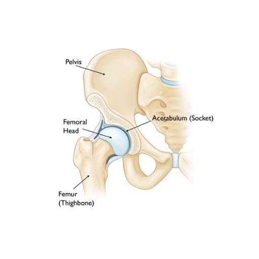
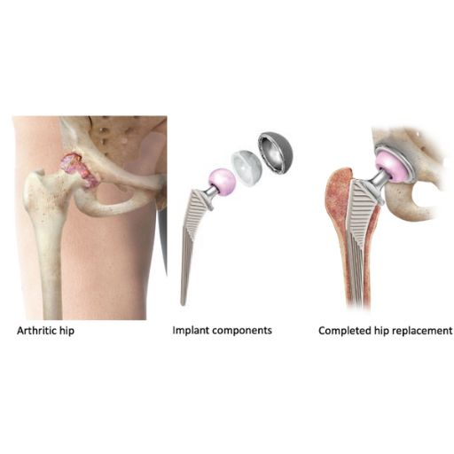

Home
Home
Prótesis de cadera
Anatomía de la Cadera
La cadera es una articulación fundamental para el movimiento y la estabilidad del cuerpo. Se trata de una enartrosis, es decir, una articulación esférica que permite una amplia movilidad. Sus principales estructuras son:
- Cabeza femoral: extremo superior del fémur, con forma de esfera, que se articula con la pelvis.
- Acetábulo: cavidad de la pelvis donde encaja la cabeza femoral.
- Cartílago articular: recubre las superficies óseas y permite el movimiento sin fricción.
- Labrum: estructura fibrocartilaginosa que contribuye a la estabilidad de la articulación.
- Ligamentos y músculos: proporcionan estabilidad y facilitan el movimiento.

Enfermedades como la artrosis, displasias congénitas, necrosis avascular o fracturas pueden deteriorar la cadera, causando dolor y pérdida de movilidad.
¿Qué es una Prótesis de Cadera?
La prótesis de cadera es un implante diseñado para reemplazar la articulación dañada y restaurar la función de la cadera. Sus componentes principales son:
- • Componente acetabular: reemplaza la cavidad del acetábulo en la pelvis.
- • Cabeza protésica: sustituye la cabeza femoral.
- • Vástago femoral: se introduce en el fémur para proporcionar estabilidad.
Los materiales utilizados incluyen metal, cerámica y polietileno de alta resistencia, asegurando compatibilidad biológica y un funcionamiento óptimo.

¿Cómo se Realiza la Cirugía?
El procedimiento quirúrgico se desarrolla en varios pasos:
- ➡️ Acceso a la articulación: Se realiza una incisión y se accede a la cadera separando los tejidos cuidadosamente.
- ➡️ Extracción de la articulación dañada: Se retira la cabeza femoral y se prepara el acetábulo.
- ➡️ Implantación de la prótesis: Se colocan los componentes protésicos, fijándolos mediante presión (prótesis no cementada) o con cemento óseo.
- ➡️ Comprobación de la estabilidad: Se verifica el rango de movimiento y la correcta fijación.
- ➡️ Cierre de la herida: Se suturan los tejidos y se inicia la recuperación.
Recuperación y Rehabilitación
Tras la cirugía, es fundamental iniciar la movilización temprana para evitar complicaciones y facilitar la adaptación de la prótesis. La rehabilitación incluye ejercicios para recuperar fuerza y flexibilidad, permitiendo al paciente retomar sus actividades diarias.
¿Por qué Elegirme?
✅ Especialización en cirugía ortopédica con experiencia internacional. ✅ Técnicas quirúrgicas avanzadas, incluyendo abordajes mínimamente invasivos. ✅ Atención personalizada con seguimiento en todas las fases del tratamiento. ✅ Resultados óptimos con enfoque en la recuperación funcional y la calidad de vida. 📍 Consulta en Hospiten Estepona 📲 También puedes contactarme a través de mis redes sociales